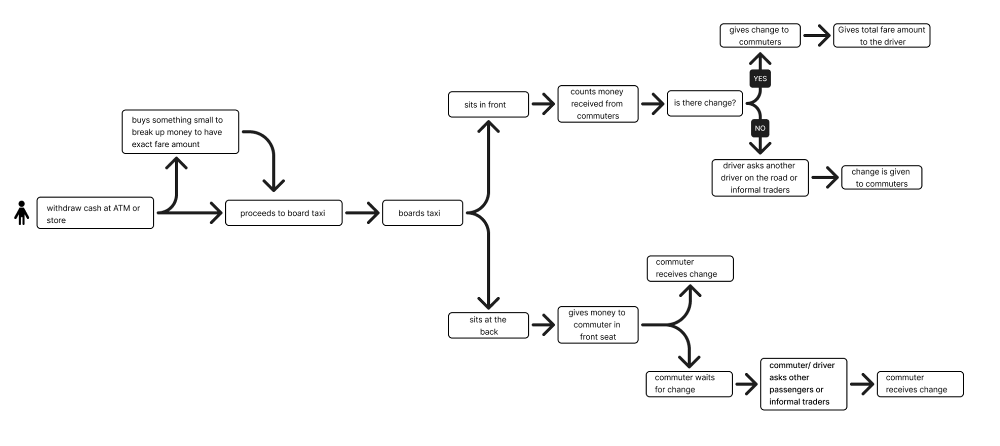
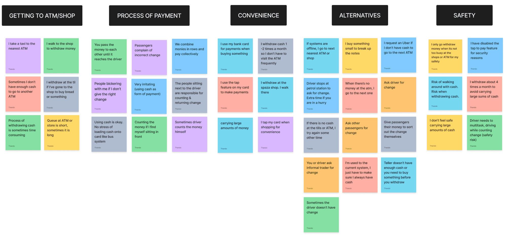
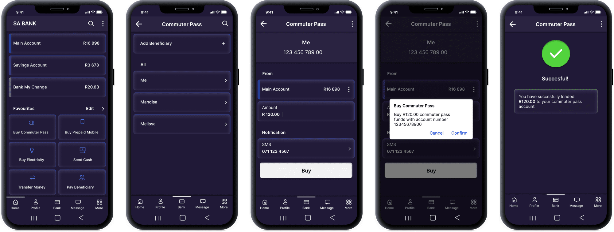

Commuters(users)
I interviewed 6 people that use taxis on a regular basis and I used a few taxis myself to observe the process. I then proceeded to create a user journey to show the fare payment process from the user's perspective.

NB: This is a conceptual project to show my workflow and thought process
Role
UX design, UX Research
Duration
8 weeks
Tools
Figma, Rhino 3D
Contributions
The South African taxi industry is an integral part of the country's transportation network. However, it is also an industry that relies heavily on cash transactions. This conceptual project will explore a cashless fare payment system.
The Cashless Fare Payment System is a conceptual project aimed at facilitating payment of fares by commuters utilizing minibus taxis. The payment process involves the use of an NFC-enabled tag, which is scanned by a validation device installed in the taxi. Commuters would have the option of loading and checking their account balance through an integrated USSD system linked to their bank, or through their respective banking app.
Understanding the current fare payment process

Learn current behaviour, pain points and needs through natural observation and interviews
Who the major competitors are and what they are doing in the industry
South Africans make up 62% of households that use taxis as their main mode of transport, while 19% use a private vehicle as a driver and 9% use the bus; however, most taxi drivers still rely heavily on cash transactions.1

...the proudly independent and largely cash-fuelled industry would need to become tax compliant and adhere to government regulations.2
I interviewed 6 people that use taxis on a regular basis and I used a few taxis myself to observe the process. I then proceeded to create a user journey to show the fare payment process from the user's perspective.
Current user journey:
All minibus taxi commuters have hilarious stories about the exchange of money in a taxi. Some people will bring R100 notes, some R50, others the exact taxi fare in coins which will end up underneath the taxi seats; squabbles often erupt in a taxi due to lack of change. Then there are those brave enough not to pay, prompting the driver to make a U-turn and drive all of us back to the taxi rank.- Oratile Seabela, Founder of MALII
After creating the affinity map and looking at the feedback, I came up with 2 archetypes:
Behaviour
Does not like to frequent the ATM, uses a card to pay where she can
Goals
Protect her belongings and feel safe
Needs
Reduce travelling to the ATM to withdraw money
Frustrations
Withdrawing large amounts for safety reasons. Does not like walking around with cash
Behaviour
Looks for ways to make things more efficient and convenient, is tech savvy
Goals
Does not want to worry about taxi fare
Needs
A convenient way to make payments
Frustrations
Travelling to withdraw cash, waiting in a queue, not having the exact fare amount, carrying cash
How might we find a way to cut out time taken to go withdraw cash and for commuters to pay fares in a convenient and hassle-free way?
Going cashless has several benefits, such as increased convenience and reduced risk of theft. By using digital payment methods, people can make transactions quickly and easily, without the need for physical cash. This not only saves time, but also eliminates the hassle of carrying large amounts of money or having to visit an ATM. For taxi owners and drivers, there would be increased transparency as the money would be able to be tracked.
See video of MALII app
See video of FAIRPAY
After brainstorming, I decided not to go with an app. I chose something physical and small enough to carry wherever; a contactless payment tag, a validation machine and a USSD code. This payment tag would have a hole to insert a keyring that could be attached to a lanyard.
A contactless payment tag would provide convenience and user friendliness for the commuter as there would be no need to take out a smartphone to pay and can be attached to a lanyard for ease of access. The validation device would be linked to the taxi owner's bank account and funds could be released at the end of each day.
The USSD code system will provide inclusion to those who don't have a smartphone and will allow commuters to check and top-up their balance, eliminating the need to go to a kiosk.
Existing banking app:
Conclusion
This conceptual project was initiated because of my personal observation of the inefficiency and inconvenience of using cash as a mode of payment in minibus taxis. However, I acknowledge that if this were to be implemented as an actual project, it would involve multiple stakeholders and include a multitude of considerations and touchpoints. I recognize that an implementation of such a project would entail a significant amount of time, exceeding the duration of 8 weeks.